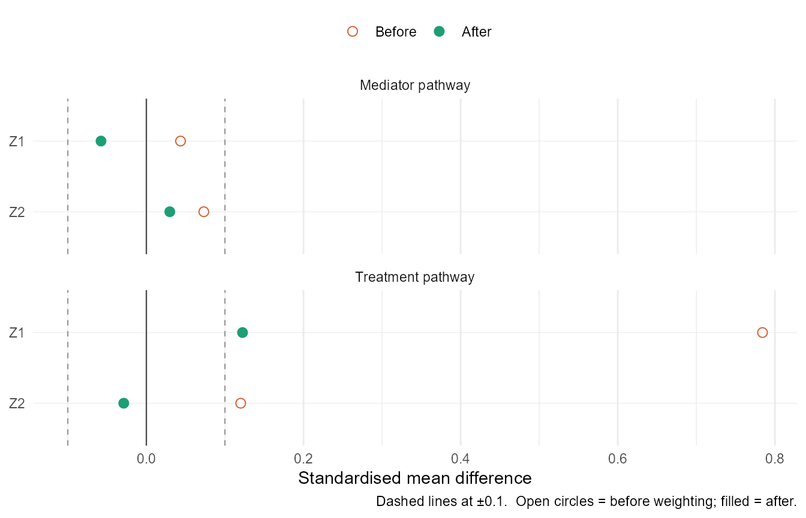
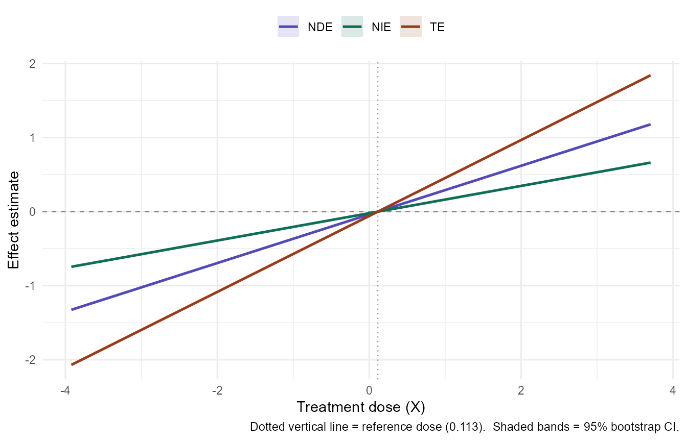
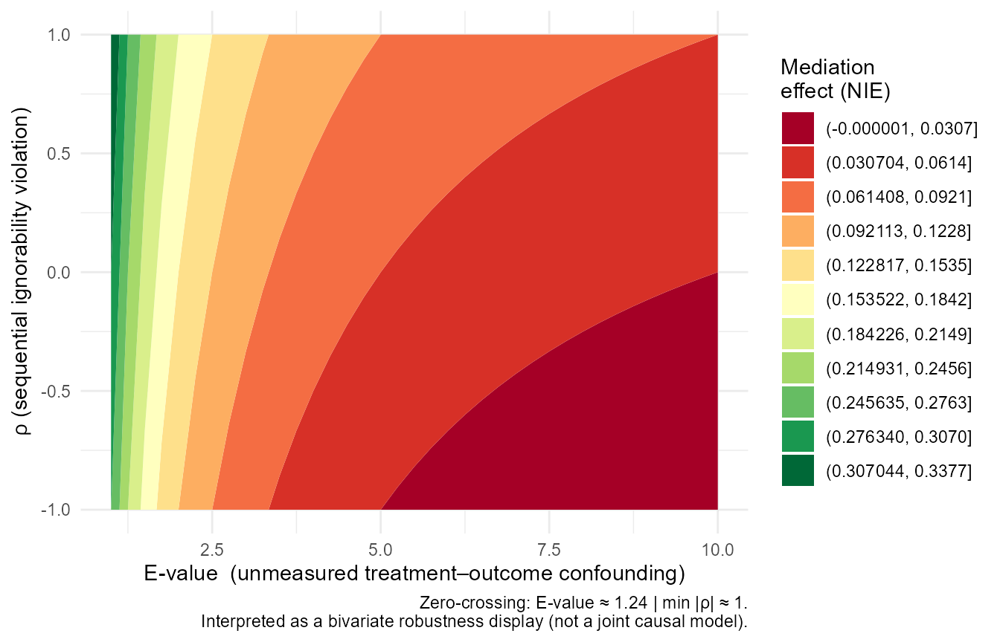

Overview
RobustMediate estimates natural direct and indirect
effects (NDE/NIE) for continuous treatments using inverse probability
weighting (IPW). It embeds three publication-ready visualisations and a
paper-writing helper (diagnose()) directly into the package
workflow.
Fitting the model
library(RobustMediate)
fit <- robustmediate(
treatment_formula = X ~ Z1 + Z2,
mediator_formula = M ~ X + Z1 + Z2,
outcome_formula = Y ~ X + M + Z1 + Z2,
data = dat,
R = 200, # use >= 500 in practice
verbose = FALSE
)
print(fit)
#> -- RobustMediate fit ------------------------------------------
#> Treatment: X | Mediator: M | Outcome: Y
#> N = 600 | Ref dose = 0.113 | Bootstrap reps = 200
#>
#> Effects at focal dose (1.778 vs ref 0.113):
#> NDE 0.5469 [NA, NA]
#> NIE 0.3070 [NA, NA]
#> TE 0.8539 [NA, NA]
#> % mediated: 36.0%
#>
#> Balance (max |SMD| after weighting):
#> Treatment pathway: 0.122 (1 covariate(s) above 0.10)
#> Mediator pathway: 0.058 (0 covariate(s) above 0.10)
#>
#> medITCV available: yes
#> medITCV profile available: yes
#> ---------------------------------------------------------------1. Love Plot — plot_balance()
The love plot shows standardised mean differences (SMDs) before and after IPW weighting for both the treatment and mediator pathways. Reviewers require |SMD| < 0.10; the dashed lines mark this threshold.
plot_balance(fit)
2. Dose-Response Curve — plot_mediation()
NDE and NIE as smooth curves over the full treatment range, with pointwise bootstrap confidence bands. The dotted vertical line marks the reference dose.
plot_mediation(fit, estimands = c("NDE", "NIE", "TE"))
#> Warning: Removed 300 rows containing missing values or values outside the scale range
#> (`geom_ribbon()`).
3. Sensitivity Contour — plot_sensitivity()
The novel bivariate robustness map. The x-axis is the E-value (how strongly an unmeasured confounder would need to be associated with both treatment and outcome to explain away the NIE). The y-axis is Imai’s ρ (sequential ignorability violation). The bold dashed contour marks where the NIE = 0.
plot_sensitivity(fit)
4. Diagnose — diagnose()
Prints a formatted report with a ready-to-paste Results paragraph.
diagnose(fit)
#> ==============================================================
#> RobustMediate: Diagnostics Report
#> ==============================================================
#>
#> -- Balance diagnostics ---------------------------------------
#> Treatment pathway: max |SMD| = 0.122 (1 covariate(s) above 0.10)
#> Mediator pathway: max |SMD| = 0.058 (0 covariate(s) above 0.10)
#> WARNING: Balance exceeds 0.10 on at least one covariate.
#> Inspect plot_balance() carefully.
#>
#> -- Mediation effects (focal dose = 1.778 vs ref = 0.113 ) ----------------
#> NDE +0.5469 [NA, NA] (95% CI)
#> NIE +0.3070 [NA, NA] (95% CI)
#> TE +0.8539 [NA, NA] (95% CI)
#> % mediated: 36.0%
#>
#> -- Sensitivity 1: E-value x rho surface ----------------------
#> E-value to nullify NIE: 1.24
#> Minimum |rho| to nullify NIE: 1.00
#>
#> Suggested text for Results section:
#> "Sensitivity analyses indicated that an unmeasured confounder
#> would need to be associated 1.2 times with both treatment and outcome
#> to fully explain away the estimated indirect effect
#> (NIE = 0.307, 95% CI [NA, NA]).
#> The sequential-ignorability violation |rho| would need to exceed
#> 1.00 to nullify this finding."
#>
#> -- Sensitivity 2: medITCV ------------------------------------
#> a-path (X -> M)
#> Observed r = 0.3677 | Critical r = 0.0802 | medITCV = 0.2875 [robust]
#> Need |r_XC * r_YC| > 0.2875 (31.3% above threshold)
#> b-path (M -> Y | X)
#> Observed r = 0.4208 | Critical r = 0.0803 | medITCV = 0.3406 [robust]
#> Need |r_XC * r_YC| > 0.3406 (37.0% above threshold)
#>
#> Bottleneck: a-path (X -> M) (minimum-path medITCV = 0.2875)
#> Use plot(fit, type = "meditcv") for visualization.
#>
#> -- Sensitivity 3: medITCV robustness profile -----------------
#> medITCV_a (X->M): 0.2875
#> medITCV_b (M->Y|X): 0.3406
#> medITCV_indirect: 0.2875
#> Fragility ratio (a/b): 0.844
#> Bottleneck: a-path (X → M)
#>
#> Tipping-point confounder r = 0.536 would nullify the indirect effect.
#> Use plot(fit, type = "meditcv_profile") for visualization.
#>
#> --------------------------------------------------------------Clustered data
Supply cluster_var to account for clustering:
fit_clus <- robustmediate(
treatment_formula = X ~ Z1 + Z2,
mediator_formula = M ~ X + Z1 + Z2,
outcome_formula = Y ~ X + M + Z1 + Z2,
data = dat,
cluster_var = "school_id",
R = 500
)Theoretical note on the sensitivity contour
The E-value × ρ surface is a bivariate robustness display, not a joint causal model. For each pair (E-value, ρ), the surface shows the estimated NIE if that single violation were present. The dimensions should be interpreted separately: researchers can ask how large each violation would need to be—on its own—to overturn the finding.